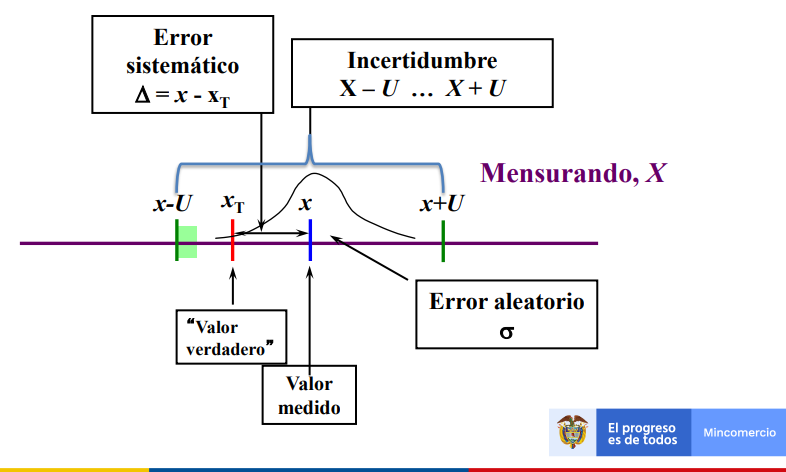

Propagación de Incertidumbre
Incertidumbre típica combinada \(u_c\)
Después de estimar los componentes de la incertidumbre y de expresarlos como incertidumbres estándar, el siguiente paso es calcular la incertidumbre estándar combinada \(u_c(y)\) que caracteriza la dispersión de los valores que podrían ser atribuidos al mensurando Y.
Resultado de la combinación de las contribuciones de todas las fuentes de incertidumbre es igual a la raíz cuadrada positiva de las varianzas de otras magnitudes, ponderadas en función de la variación del resultado de medida con la variación de dichas magnitudes (GUM).
Se distinguen dos casos para hallar la incertidumbre, en donde las variables pueden ser dependientes o independientes, en ambos casos las ecuaciones están basadas en un desarrollo en serie de Taylor de primer orden de \(Y = f(X_1, X_2, ..., X_N)\), expresan lo que en la Guía se denomina ley de propagación de la incertidumbre.
- Para magnitudes independientes
La incertidumbre típica combinada \(u_c(y)\) es la raíz cuadrada positiva de la varianza combinada \(u_c^2(y)\), dada por:
\[u_c^2(y)=\sum_{i=1}^N \left[ \frac{\partial f }{\partial x_i} \right]^2 u^2(x_i)\]
Con las derivadas parciales \(\frac{\partial f }{\partial x_i}\) calculadas para \(Xi\), se obtienen unas constantes llamadas coeficientes de sensibilidad, describen cómo varía la estimación de salida y, en función de las variaciones en los valores de las estimaciones de entrada \(x_1, x_2, ..., x_N.\)
Los coeficientes de sensibilidad pueden ser evaluados de manera experimental; es útil donde no existe una descripción matemática fiable de la relación.
\[c_i=\frac{\partial f }{\partial x_i}\]
reemplazando en la ecuación anterior se obtiene
\[u_c^2(y)=\sum_{i=1}^N c_i^2 u^2(x_i)\] de forma equivalente:
\[u_c(y)=\sqrt {\sum_{i=1}^N c_i^2 u^2(x_i)}\]
- Para magnitutes correlacionadas
Cuando las variables no son independientes, la relación es más compleja, GUM expresa la incertidumbre típica como:
\[u_c^2(y)=\sum_{i=1}^N \sum_{j=1}^N \frac{\partial f }{\partial x_i}\frac{\partial f }{\partial x_j}u(x_i,x_j)=\sum_{i=1}^N\left[ \frac{\partial f }{\partial x_i} \right]^2 u^2(x_i)+2\sum_{i=1}^{N-1}\sum_{j=i+1}^N \frac{\partial f }{\partial x_i} \frac{\partial f }{\partial x_j} u(x_i,x_j)\]
donde \(x_i\) y \(x_j\) son las estimaciones de \(Xi\) y \(Xj\), y \(u(x_i,x_j)=u(x_j,x_i)\) es la covarianza estimada asociada a \(x_i\) y \(x_j\).
El grado de correlación entre xi y xj viene dado por el coeficiente de correlación estimado como
\[r(x_i,x_j)=\frac{u(x_i,x_j)}{u(x_i)u(x_j)}\] donde \(r(xi,xj) = r(xj,xi) y −1 ≤ r(xi,xj) ≤ +1.\)
Si las estimaciones \(x_i\) y \(x_j\) son independientes, \(r(x_i,x_j) = 0\), ees una variación en una de las dos no implica una variación en la otra.
El segundo término de la covarianza, puede escribirse en función de los coeficientes de correlación, más fácilmente interpretables que las covarianzas, como:
\[2\sum_{i=1}^{N-1}\sum_{j=i+1}^N \frac{\partial f }{\partial x_i} \frac{\partial f }{\partial x_j} u(x_i) u(x_j) r(x_i,x_j)\] La ecuación queda transformada en
\[u_c^2(y)=\sum_{i=1}^N \sum_{j=1}^N \frac{\partial f }{\partial x_i}\frac{\partial f }{\partial x_j}u(x_i,x_j)=\sum_{i=1}^N\left[ \frac{\partial f }{\partial x_i} \right]^2 u^2(x_i)+2\sum_{i=1}^{N-1}\sum_{j=i+1}^N \frac{\partial f }{\partial x_i} \frac{\partial f }{\partial x_j} u(x_i) u(x_j) r(x_i,x_j))\] En esta ecuación haciendo
\[c_i=\frac{\partial f}{\partial x_i}\quad u_i(y)=|c_i|u(x_i)\] y asumiendo que las correlaciones son 0, el 2 termino no existe Se llega a:
\[u_c(y)=\sqrt {\sum_{i=1,n}c_i^2 u^2(x_i)}\]
donde
- f es la función del mesurando dada por:
\[Y=f(X_1,X_2,...,x_n)\]
Cada \(u(xi)\) es una incertidumbre típica, (Tipo A o Tipo B).
\(c_i\) y \(c_k\), son los coeficientes de sensibilidad
\(u(x_i,x_j)\) es la covarianza entre \(x_i\) y \(x_k\)
La covarianza se relaciona con el coeficiente de correlación \(r_{ik}\) de este modo:
\[u(x_i,x_k) = u(x_i)*u(x_k)*r_{ik}\]
donde \(-1 \leq rik \leq 1\)
Otras formas
En algunos casos, las expresiones para combinar incertidumbres se reducen a formas más sencillas. Aquí se dan dos reglas simples para combinar incertidumbres estándar.
Regla 1
Para modelos que supongan solo una suma o diferencia de cantidades, por ejemplo \(y=(p+q+r+...)\), la incertidumbre estándar combinada uc(y) viene dada por: \[uc (y(p,q..))=\sqrt {u(p)^2 +u(q)2^.....}\]
EJEMPLO 6 sea la ecuación
\[y = (p-q+r)\]
| valores | p | q | r |
|---|---|---|---|
| valor | 5.02 | 6.45 | 9.04 |
| \(u(c)\) | 0.13 | 0.05 | 0.22 |
\[y = (5.02-6.45+9.04)=7.61\] \[u(y)=\sqrt{0.13^2+0.05^2+0.22^2}\]
Regla 2
Para modelos que impliquen un producto o un cociente, por ejemplo \(y=(p\ast q\ast r ...)\) o \(y= p/(q\ast r...),\), la incertidumbre estándar combinada \(u_c(y)\) es dada por
\[u_c(y)=y*\sqrt{\left[ \frac{u(p) }{p} \right]^2+ \left[ \frac{u(q) }{q} \right]^2+.... }\]
donde (u(p)/p) son las incertidumbres en los parámetros, expresadas como desviaciones estándar relativas.
EJEMPLO 7 \[y = (op/qr)\].
| valores | o | p | q | r |
|---|---|---|---|---|
| valor | 2.46 | 4.32 | 6.38 | 2.99 |
| \(u(c)\) | 0.02 | 0.13 | 0.11 | 0.07 |
\[y=(2,46*4,32 )/(6,38 *2,99 ) = 0,56\]
\[u(y)=0.56\sqrt{\left[ \frac{0.02 }{2.46} \right]^2+ \left[ \frac{0.13 }{4.32} \right]^2+\left[ \frac{0.11 }{6.38} \right]^2+ \left[ \frac{0.07 }{2.99} \right]^2}\]
\[u(y)=0.56*0.043=0.024\]
A manera de resumen evidenciamos la siguiente tabla donde se relaciona la función con la estimación de incertidumbre.
| Función | \(\bf \mu_R\) |
|---|---|
| \(R=kA\) | \(\mu_R=k\mu_A\) |
| \(R=A\pm B\) | \(\mu_R=\sqrt {\mu_A^2+\mu_B^2}\) |
| \(R=A*B \qquad R=\frac{A}{B}\) | \(\frac{\mu_R}{R}=\sqrt {\left(\frac{\mu_A}{A} \right)^2+\left(\frac{\mu_B}{B} \right)^2}\) |
| \(R=ln(A)\) | \(\mu_R=\frac{\mu_A}{A}\) |
| \(R=log(A)\) | \(\mu_R=0.4343*\frac{\mu_A}{A}\) |
| \(R=e^A\) | \(\frac{\mu_R}{R}=\mu_A\) |
| \(R=ln(A)\) | \(\mu_R=\frac{\mu_A}{A}\) |
Ejemplo 8:
Las especificaciones del fabricante de un voltímetro digital indican que “entre uno y dos años después de la calibración del instrumento, su exactitud en el rango de 1 V es \(14 × 10^{-6}\) veces la lectura más \(2 × 10^{-6}\) veces el rango”.

Supongamos que el instrumento se utiliza 20 meses después de la calibración para medir una diferencia de potencial V en el rango de 1 V, y que se obtiene como media aritmética de un número de observaciones repetidas e independientes el valor V = 0,928 571 V, con una incertidumbre típica tipo A, u(V)=12 μV.
La evaluación Tipo B de la incertidumbre típica se deduce de las especificaciones del fabricante, se supone que la exactitud representa los límites simétricos de una corrección aditiva a V , ΔV , de esperanza matemática igual a cero y pudiendo situarse con igual probabilidad entre dichos límites.
La semiamplitud a de la distribución rectangular simétrica de los valores posibles de Δ V , es entonces
\[a=(14 × 10^{-6})×(0,928571 V) + (2× 10^{-6})×(1V)=15 μV\]
y, a partir de la ecuación de la incertidumbre dada por una distribución rectángular:
\[u_c=\frac{a}{\sqrt 3}=\frac{15μV }{\sqrt 3}=8.7μV\]
\[u^2(ΔV)=75 (μV)^2 \quad u(ΔV) = 8,7 μV\]
La estimación del valor del mensurando V, denominada por simplificación con el mismo símbolo V, viene dada por
\[V = V + Δ V = 0,928 571 V\]
Puede obtenerse la incertidumbre típica combinada de esta estimación combinando la incertidumbre típica Tipo A de V, 12 μV, con la incertidumbre típica Tipo B de ΔV , 8,7 μV. .
la corrección aditiva ΔV = 0, y u(ΔV) = 8,7 μV. Como::
\[\frac{\partial V}{\partial V}=1\]
\[\frac{\partial V}{\partial ΔV}=1\] La varianza combinada asociada a V viene dada por:
\[uc^2(V) = u^2(V) + u^2(ΔV) = (12 μV)^2 + (8,7 μV)^2 = 219* 10^{-12} V\]
y la incertidumbre típica combinada es \[u_c(V) = 15 μV\]
Incertidumbre dominante
Si una de las contribuciones a la incertidumbre puede identificarse como un término dominante, denotado por \(\mu_1(y)\), y otra incertidumbre se denota por \(\mu_R(y)\), la incertidumbre estándar que se asociará con el resultado de la medición es:
\[\mu(y)=\sqrt{\mu_1^2(y)+\mu_R^2(y)}\]
Donde el termino \(\mu_R(y)\) es la combinación de las contribuciones no dominantes, estimada como:
\[\mu_R(y)=\sqrt{\sum_{i=2}^N \mu_i^2(y)}\]
Criterio de la distribución dominante
En la relación
\[ \frac{\mu_R(y)}{\mu_1(y)}=R\]
Si \(R\leq 0.3\) Se dice que la contribución de la incertidumbre de mayor valor es la incertidumbre dominante y la ecuación de la incertidumbre típica combinada puede aproximarse como:
\[\mu_c(y)=\mu_1(y)*\left[1+\frac{1}{2} \left( \frac{\mu_{R}(y)}{\mu_1 (y)} \right)^2 \right]\]
Con un error relativo de aproximación menor que \(1*10^{-3}\).
Incertidumbre expandida \(U\)
Magnitud que define un intervalo en torno al resultado de una medición, y en el que se espera encontrar una fracción importante de la distribución de valores que podrían ser atribuidos razonablemente al mensurando (GUM).

Para obtener la incertidumbre expandida se multiplica la incertidumbre típica combinada por el factor de cobertura (K) escogido para obtener una incertidumbre expandida.
El intervalo se denota como
\[(y-u_c(y)K_p,\quad y+u_c(y)K_p)\]
El producto \(K_pu_c(y)=U_p\) se denomina incertidumbre expandida, donde \(k_p\) es el factor de cobertura para un nivel de confianza p.
matemáticamente es
\[P(y-U_p\leq Y\leq y+U_p)=p\]
El area de la función de densidad es
\[\int_{y-U_p}^{y+U_p} f(y)dy=p \]
La función f(y) puede ser una normal, una t student, una triangular o una rectangular.
Informe de la incertidumbre expandida
El resultado x debe ser establecido junto con la incertidumbre expandida U calculada usando un factor de cobertura k=2 (o como se describe en la sección Se recomienda hacerlo del modo siguiente:
\[(Resultado): (x \pm U) (unidades)\] [donde] la incertidumbre informada está calculada usando un factor de cobertura de 2, [lo que da un nivel de confianza de aproximadamente 95 %]”
\[Nitrógeno \quad total: (3,52 \pm 0,14) g/100 g \]
*La incertidumbre informada es una incertidumbre expandida calculada usando un factor de cobertura de 2, lo que da un nivel de confianza de aproximadamente el 95%.
Factor de cobertura K según el tipo de distribución
Al escoger un valor para el factor de cobertura k, se deben considerar varios aspectos.
Entre ellos se incluyen:
El nivel de confianza requerido.
Las distribuciones subyacentes.
Valores usados para estimar efectos aleatorios.
Incertidumbre dominante
Bajo la distribución normal
En la mayoría de los casos se recomienda que k sea 2, este valor se relaciona con un nivel de confianza del 95.45%. Según el nivel de confianza el factor de cobertura cambia
| Nivel de confianza en porcentaje | Factor de cobertura |
|---|---|
| 68.27% | ? |
| 90% | ? |
| 95% | ? |
| 95.45% | ? |
| 99% | ? |
| 99.73% | ? |
Este intervalo tiene su fundamento en la regla empírica de la estadística y se construye con la distribución normal.
Si la distribución de la población de una variable es (aproximadamente) normal, entonces
1.68% de los valores están dentro de 1 DE (desviación estándar) de la media.
\[\LARGE P(\mu-\sigma\leq x \leq \mu+\sigma)=68.27\%\]
95% de los valores están dentro de 2 DE de la media. \[\LARGE P(\mu-2\sigma\leq x \leq \mu+2\sigma)=95.45\%\]
99.7% de los valores están dentro de 3 DE de la media.
\[\LARGE P(\mu-3\sigma\leq x \leq \mu+3\sigma)=99.73\%\]
Graficamente:

Bajo la distribución rectángular
Si se cumple el criterio de la distribución dominante, la distribución apropiada es la rectángular, donde el factor de cobertura (después de unos calculos complejos) se evalúa asi:
\[k=p\sqrt 3\] Donde p es el nivel de confianza deseado

Distribución t student
Cuando la incertidumbre estándar combinada está dominada por una sola contribución con menos de 6 grados de libertad (pocas observaciones (n-1)), se recomienda que k sea fijado igual al valor de la t de Student para dos colas, para el número de grados de libertad asociado con esa contribución, y para el nivel de confianza requerido (normalmente 95%).
La elección de k depende del número efectivo de grados de libertad.
Ejemplo 9
Una incertidumbre estándar combinada para una operación de pesaje está formada por la contribución de la incertidumbre de la calibración \(u_{cal}=0,01 mg\) y la desviación estándar de cinco observaciones repetidas \(s_{obs}=0,08 mg\).
La incertidumbre estándar combinada \(u_c\) es:
\[u_c=\sqrt {0,01^2+ 0,08^2} = 0,081 mg\]
La incertidumbre está dominada por la contribución de la repetibilidad \(s_{obs}\), la cual está basada en 5 observaciones, dando 5-1=4 grados de libertad. Entonces k está basada en la t deStudent. El valor para dos colas de t para cuatro grados de libertad y 95% de confianza es 2,8; por lo que k toma el valor de 2,8 y la incertidumbre expandida es
\(U=2,8*0,081=0,23 mg\).
Cuantificación del número de grados de libertad
Los grados de libertad se pueden considerar una medida de la incertidumbre de una magnitud.
Entre mayor sea ùúà, la estimaci√≥n de la incertidumbre será más confiable.
Número efectivo de grados de libertad \((ùúà_{eff})\) del mensurando
Considera el número de grados de libertad \(ùúà_ùëñ\) de cada fuente de incertidumbre
Una cantidad que depende de la medición de varias variables:
\[q=q(x_1,x_2,...x_n)\] En el caso que las variables no estén correlacionadas (covarianza nula):
\[S_q^2=c_1^2s^2_{x_1}+c_2^2s^2_{x_2}+...+c_1^2s^2_{x_1}\]
Donde los \(c_i\) son los coeficientes de sensitividad y están definidos por las derivadas parciales. Cada una de las incertidumbres \(s_{x_i}\) está asociada con \(ν_i\) grados de libertad.
Grados de libertad para una incertidumbre tipo B
Se puede asignar grados de libertad a una incertidumbre tipo B, aún cuando las incertidumbres puedan ser de tipo B, para especificar una incertidumbre en un reporte, seguramente se hicieron muchas medidas, es decir que originalmente es de tipo A, que se convierte en tipo B al ser usada la información por otros. En consecuencia es posible suponer que el valor obtenido del reporte tiene una distribución normal aún cuando la incertidumbre estándar asociada es del tipo B.
Los grados de libertad están dados por:
\[v=\frac{s^2}{2u^2(s)}= \frac{1}{2} \left(\frac{u(s)}{s} \right)^{-2}\]
La pregunta que surge es cuantos grados de libertad deberían asociarse a \(S_q\) para poder calcular un intervalo de confianza. La respuesta esta dada por la fórmula de Welch-Satterthwaite, que aunque aproximada, es adecuada en la mayoría de los casos.
\[\frac{\mu^4_c(y)}{v_{eff}}=\sum_{i=1}^N\frac{c_i^4*\mu^4(x_i)}{v_i}+2 \sum_{i=1}^N\sum_{i=1}^N \left(\frac{c_i*c_j*\mu(x_i)*\mu(x_j)*r(x_i,x_j)}{v_j} \right)^{2}\]
Donde:
N número de fuentes de incertidumbres identificadas y cuantificadas
\(v_i,v_j\): Grados de libertad asociados a la fuente de incertidumbre i o j
\(r(x_i,x_j)\): coeficiente de correlación entre las variables i y j
Si las variables son no correlacionadas el segundo término de la Ecuación se hace cero.
Escrito de otra manera
\[v_{ef}=\frac{U^4_c(y)}{\sum_{i=1}^{n}\frac{c_i^4u^4(x_i)}{vi}}\]
Informar la incertidumbre

Cuando la incertidumbre se exprese como la incertidumbre estándar combinada uc (es decir como una desviación estándar simple), se recomienda hacerlo de la siguiente forma:
EJEMPLO 10
Resultado:
x (unidades) [con una] incertidumbre estándar de uc (unidades)
Nitrógeno total: 3,52 g/100 g
Incertidumbre estándar: 0,07 g/100 g
La incertidumbre estándar corresponde a una desviación estándar